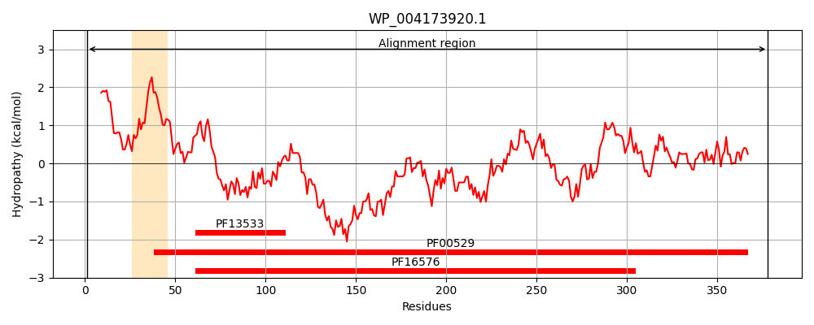
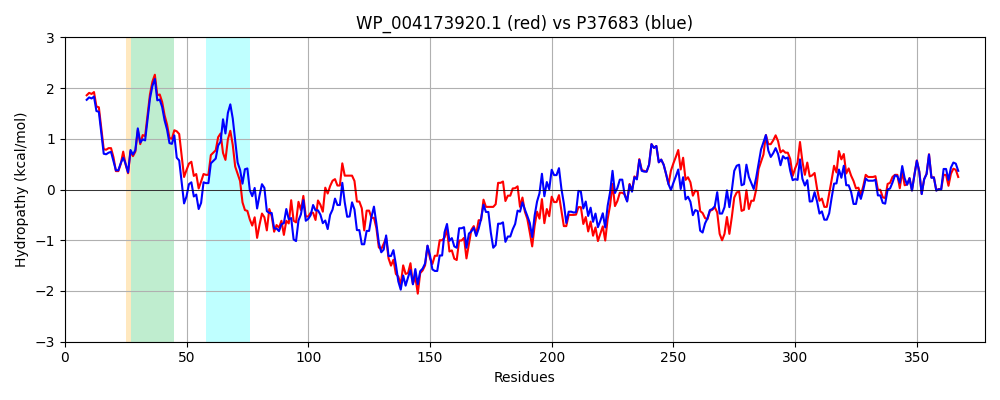

Hit Accession: P37683
Hit TCID: 8.A.1.1.4
Hit Description: gnl|BL_ORD_ID|10133 gnl|TC-DB|P37683|8.A.1.1.4 Inner membrane protein yiaV OS=Escherichia coli (strain K12) GN=yiaV PE=1 SV=1
Mach Len: 378
e:0.000000
Query TMS Count : 1
Hit TMS Count: 2
TMS-Overlap Score: 0.950000
Predicted Substrates:None
BLAST Alignment:
Score: 1511 , Bit scores: 586 bits, E-value: 0.0e+00, Alignment length: 378, Percentage identity: 77
Query: 1 MDLLIILTYVAIAWSIFKIFKIPVNKWTVPTAALGGVFIVSALILLMNYNHPYTFLAQKAVISIPITPQVTGVVNSVTDKANQRVKKGEVLFTIDPARYQARVDRLQADLVTALHSINTLKAQLSEAQANTTRVSAERDRLYKDYQRYLKGSQARVNPFSESDIDNARQNYLAQDALVKASVAEQAQIQSQLDSMINGEQSQVASLRAQLAEAKYNLDQTTVRAPSDGYITQVLIRPGTYAASLPLRPVMVFIPEQKRLIVAQFRQNSLLRLEKGDDAEAVFNALPGQVFHGKLVSILPVVPGGSYQAQGALQSLTVTPGSDGVLATIELDPNAEIDALPDGIYAQVAVYSDHFTHVSVMRKVLLRMTSWMHYLYLDH 378
MDLLIILTYVA AW++FKIFKIPVNKWT+PTAALGG+FIVS LILLMNYNHPYTF AQKAVISIP+ PQVTGVV VTDK N +KKGEVLF +DP RYQARVDRL AD+VTA H L A+L E ANT + A RD+ K+YQRY +GSQA+VNPFSE DID ARQNYLAQ+A VK+S AEQ QIQSQLDS++ GE SQ+ASL+AQLAEAKYNL+QT VRAPSDGY+TQVLIRPGTYAASLPLRPVMVFIP+QKR IVAQFRQNSLLRL GDDAE VFNALPG+VF GKL +I P VPGG+YQ+ G LQ+L PGSDGV+ATIELD + ++ ALPDGIYAQVAVYSDHF+HVSVMRKVLLRMTSW+HYLYLDH
Sbjct: 1 MDLLIILTYVAFAWAMFKIFKIPVNKWTIPTAALGGIFIVSGLILLMNYNHPYTFKAQKAVISIPVVPQVTGVVIEVTDKKNTLIKKGEVLFRLDPTRYQARVDRLMADIVTAEHKQRALGAELDEMAANTQQAKATRDKFAKEYQRYARGSQAKVNPFSERDIDVARQNYLAQEASVKSSAAEQKQIQSQLDSLVLGEHSQIASLKAQLAEAKYNLEQTIVRAPSDGYVTQVLIRPGTYAASLPLRPVMVFIPDQKRQIVAQFRQNSLLRLAPGDDAEVVFNALPGKVFSGKLAAISPAVPGGAYQSTGTLQTLNTAPGSDGVIATIELDEHTDLSALPDGIYAQVAVYSDHFSHVSVMRKVLLRMTSWVHYLYLDH 378 | Protein Hydropathy Plots: |
|---|
|  |  |
Pairwise Alignment-Hydropathy Plot:
|
|---|
|  |